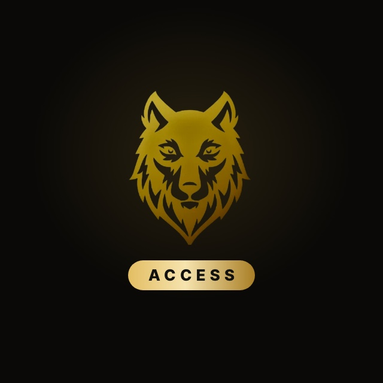
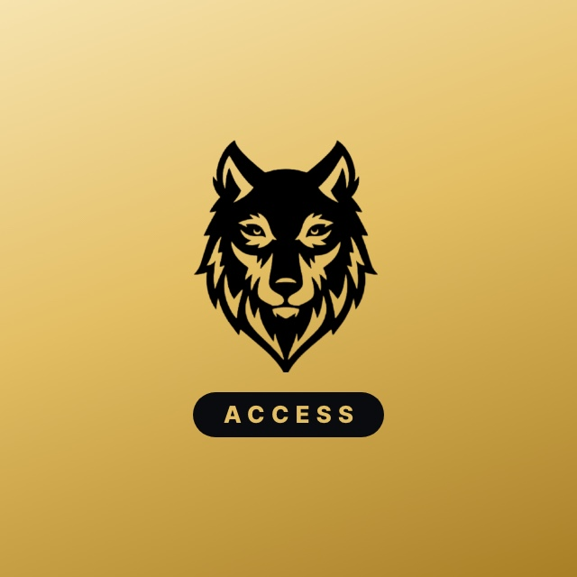
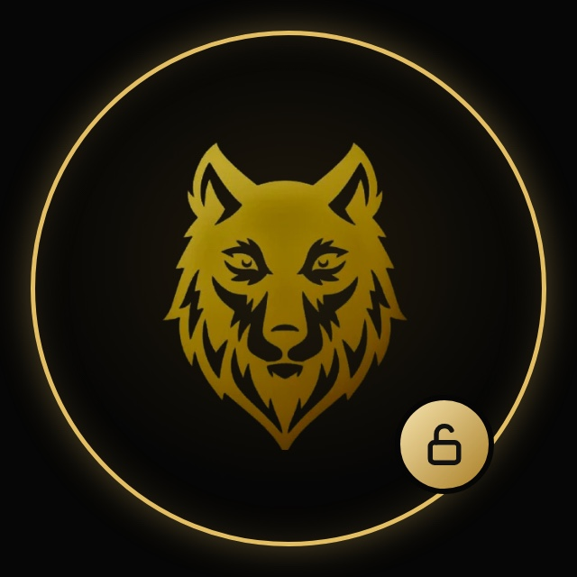

Foto de perfil de @Wolfx_Access_bot
En círculo como la recorta Telegram, y en pequeño como sale en la lista de chats. Origen: commit 826d8624.

Wolfx Access
bot
P1 · Lobo dorado sobre negro, ACCESS
Wolfx Access
bot
P2 · Lobo negro sobre oro, ACCESS
Wolfx Access
bot
P3 · Anillo dorado y candado abierto